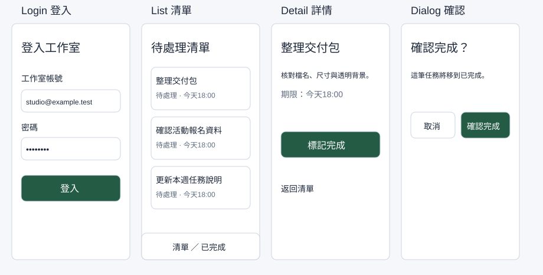

讓畫面看得清楚：色彩、字型與閱讀順序
你要製作「工作室待處理清單」。先決定標題、內文、按鈕和錯誤訊息怎麼呈現，再用同一套規則完成登入與清單畫面。本堂會留下色彩表、文字樣式表與一張 402×874 手機畫面。
開始前，先找到材料與起點
你能開啟瀏覽器、輸入文字、儲存檔案即可開始，不需要會畫圖或寫程式。若不知道 Frame、Layers 或如何選取，先依下一節完成第一個物件。
先開啟本堂起始材料（HTML），讀取輸入與圖層名稱；操作在你的 Figma 檔或本堂指定工具完成。完成後到本堂完成檢查表（可儲存／下載）記錄實際結果。
第一次用 Figma：建立自己的課程檔
- 開啟課前準備與操作速查，完成登入。這門課用 Figma Design，請建立設計檔，不選 FigJam、Slides 或 Make。
- 在檔案首頁開啟 Drafts／草稿，選 New design file，將檔名改為「工作室任務清單－你的姓名」。看到畫布、左側 Layers（圖層）、右側 Design（設計）後繼續。
- 按 F，於空白畫布拖出 Frame（畫板），在右側 W、H 輸入 402、874。左側將它命名為
Screen / Login。Frame 是放置畫面內容的容器，Rectangle 只是形狀，不能當作同樣的容器。 - 按 T，點在 Frame 裡輸入「登入工作室」。按 Esc 結束文字編輯，再以左側 Layers 選取這個文字層。右側要看到字型與字級設定；看不到時先確認選到的是文字，沒有選整張畫板。
- 用 T 建立內文「登入後檢視待處理的任務。」與提示「請輸入工作室帳號」。暫時分別放在 y120、y168、y240。這裡先學閱讀規則，精準容器排列在第 03 堂完成。
先決定每個顏色的工作
「色彩角色」就是一個顏色固定負責一件事。主要按鈕使用綠色，錯誤用紅色並加上文字；避免同一種綠色同時表示警告、成功和一般連結。下表是本課範例，可以沿用，之後再依作品調整。
| 角色 | 色碼 | 使用位置 | 選擇理由 |
|---|---|---|---|
| Primary 主要動作 | #245B45 | 登入、確認完成按鈕 | 與白字有清楚對比，讓主要動作容易辨認 |
| Text 主要文字 | #1E293B | 標題與內文 | 淺底上的深色文字 |
| Muted 次要文字 | #5F6C80 | 日期、輔助資訊 | 比內文弱，但仍須可讀；不要拿來做更淡的正文 |
| Surface 畫面底色 | #F5F7FA | 手機背景 | 與白色卡片分出層次 |
| Card 卡片底色 | #FFFFFF | 表單、任務列 | 讓內容聚成一組 |
| Border 邊界 | #CBD5E1 | 一般卡片邊界 | 補充輪廓；輸入框另用 #5F6C80，讓界線更清楚 |
| Error 錯誤 | #B91C1C | 欄位錯誤 | 同時寫「帳號格式不正確」，不能只換色 |
| Success 成功 | #15803D | 完成訊息 | 搭配「已完成」文字或勾號 |
| Warning 警告 | #92400E | 需要注意的提醒 | 搭配具體原因，不能只放黃點 |
| Disabled 停用 | #E2E8F0 底、#5F6C80 字 | 不能執行的按鈕 | 同時說明尚缺的資料，不只讓按鈕變淡 |
選取物件，在 Design 的 Fill（填色）點色塊，輸入六位色碼。文字也用 Fill 改色。建立數個小色塊，每個旁邊寫角色與色碼，合併放在 Reference / Visual rules Frame，後面每堂都從這裡查值。
對比怎麼判斷？對比值描述前景與背景亮度的差距；一般文字通常以 4.5:1 為基準，大字以 3:1 為基準。不能只靠「看起來差不多」。本課白字／主要綠底與深字／白底符合一般文字基準，次要灰字應放在白底或本課淺底上；更換任一顏色後要重新檢查。W3C 對比說明提供計算條件。現在用本課對比檢查器輸入兩個色碼。白字／主要綠底應約7.90:1；記錄實際比值後再改色。更淡的灰色可能在白底通過、淺灰底卻不算通過，要分別計算。
字級、字重與行高一起設定
字型是字的樣子；字級是大小；字重是粗細；行高是每一行佔用的垂直空間。只改字級仍可能讓兩行文字擠在一起。課程以 Noto Sans TC 為例；清單找不到時用系統可用的繁體中文字型（如 PingFang TC／微軟正黑體），並在交付規格記錄實際字型，不要假裝已安裝。
| 用途 | 字級／行高（px） | 字重 | 範例 |
|---|---|---|---|
| 畫面標題 | 24／32 | Bold 700 | 待處理清單 |
| 卡片標題 | 18／28 | Medium 500 | 整理交付包 |
| 內文、欄位、按鈕 | 16／24 | Regular 400；按鈕 Medium 500 | 點選任務檢視詳情 |
| 日期與輔助文字 | 14／22 | Regular 400 | 更新於今天 |
自己選取標題「登入工作室」，在右側Text設定字級24、行高32px、字重700；接著選內文設成16／24／400，輔助文字設成14／22／400。數字順序都是字級／行高／字重。逐一點回三個文字層，核對右側值與文字規則表一致，再看手機Frame內的長句是否完整。字型沒有700或400時選最接近的可用粗細並記錄差異；字重清單沒有Medium時也用實際可取得的粗細。右側Line height若是Auto或百分比，改成明確px值。建立文字樣式的入口通常在Text樣式圖示；若找不到，先以規則表完成設定，樣式的儲存不影響本堂核心結果。課堂示範也依此路徑，獨讀時可直接完成。

跟著做：用閱讀任務檢查規則
- 在手機 Frame 加上白色區塊及主要綠色按鈕形狀，旁邊標示將使用的色碼。此時不驗收按鈕結構，第 03、06 堂會完成真正容器。
- 在白底建立「帳號格式不正確，請輸入工作室電子郵件。」紅色文字，設為 14／22。文字必須說明問題和修正方向。
- 把內文改成「登入後，先檢視待處理清單，再選取一筆任務確認內容與期限。」讓文字框寬 354，採文字 Auto height／自動高度。文字應換行而不被裁切。
- 不看規格表，說出哪一個文字是標題、哪個動作最主要、錯誤發生在哪裡。再核對實際字級、字重與色碼。若只能靠位置猜測，修正層級或文字。
- 在規則表旁記下兩組前景／背景的對比值、實際字型，以及「用文字補足顏色」的例子。儲存檔案，等右上同步狀態完成再關閉。
卡住時：文字設定不見，回 Layers 選 T 圖示的文字層；長句超出畫面，改文字框寬度與文字 Auto height；中文字變成方框，換成支援中文的字型；錯誤只有紅色，補上問題與修正句。先修這些，再把整張畫面截圖。
自己完成：改變條件再檢查
把主要綠色改成你選的品牌色，只更換 Primary。檢查白字是否仍可讀；不合基準就改字色或改深背景，寫下取捨。另將一段日期改成「今天 18:00 前完成」的警告，選擇 Warning 色並加上原因。交出規則表及修改前後畫面，不能用縮小字級塞進長句。
完成條件與理解檢查
- 色彩表有角色、色碼與用途，錯誤／警告／成功都包含文字線索。
- 文字表有實際字型、字級、行高與字重，手機長句完整可讀。
- 至少記錄主要按鈕與一般內文兩組對比，能說明更換 Primary 後的取捨。
想一想：為什麼「錯誤訊息改成紅色」還不夠？
展開參考答案與理由
有些人無法靠顏色分辨狀態，而且紅色本身不會說明原因。需要文字指出哪個欄位出錯、如何修正；顏色是輔助線索。
本堂查證來源
來源查證：2026-10-09。